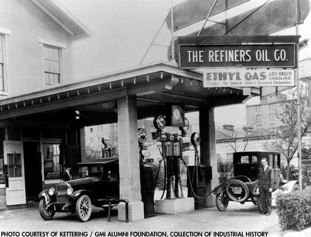
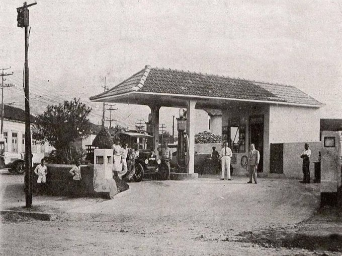

No início do século XX, duro não era achar petróleo, mas um posto de gasolina. Como aquela gente abastecia o carro? A gasolina era um subproduto do refino do petróleo para a produção de querosene. E o querosene vinha sendo usado para a iluminação de ruas e residências desde 1860.
Naquela época, de cada 100 barris de petróleo extraíam-se 60 de querosene. Parte da “sobra” do processo de refino resultava em 11 barris de gasolina, que, na maioria dos casos, era simplesmente jogada fora, por falta de utilidade: era apenas um solvente de qualidade inferior. Foram os carros, no século XX, que deram à gasolina uma utilidade prática. No Brasil já havia importadores de derivados de petróleo desde 1870, quando a iluminação das vias públicas do Rio de Janeiro incrementou o uso do querosene.
Os proprietários dos primeiros automóveis compravam a gasolina em tambores de 200 litros, nos armazéns de secos e molhados – que vendiam de tudo. Depois, transferiam a gasolina para recipientes menores e abasteciam o carro usando um funil. O primeiro posto de combustível, foi instalado na farmácia cidade em Wiesloch, na Alemanha, onde a Bertha Benz abastecia o tanque o primeiro carro fabricado, para ir de Mannhein a Pforzheim em 1888 (desde 2008 há um raid e um rallye histórico que percorre a agora chamada Bertha Benz Memorial Route).
O conceito do “posto de gasolina” só surgiria em 1907, quando Henry Ford inaugurou o primeiro deles, o Automobile Gasoline Company, na cidade de St. Louis, EUA, um galpão de zinco com duas bombas instaladas no alto de pedestais, para que a gasolina descesse por gravidade.O segundo foi construído em 1907 pela Standard Oil of California (conhecida hoje em dia como Chevron), em Seattle, Washington. Aliás a Standard Oil foi a primeira a construir postos ao longo das rodovias com seu logo, originando as chamadas “bandeiras”
Os postos só chegariam ao Brasil em 1915, com a Texaco, quando a quantidade de automóveis em circulação permitia sua sobrevivência econômica. Antes disso estavam por aqui, distribuindo gasolina e combustíveis, a Esso (que chegou em 1912) e a Shell (em 1913). Deve-se a descoberta do querosene ao geólogo canadense Abraham Gesner, em 1849. A partir da invenção do lampião a querosene, em 1857, o óleo de baleia seria substituído pelo querosene como principal meio de iluminação – até 1878, quando foi inventada a lâmpada elétrica. A palavra querosene derivou do grego keros, “cera”, porque seu refino exigia o uso de cera de parafina.
Já a história da palavra “gasolina” é mais curiosa: ela data de 1865 – o nome original eragasolene – e derivou de “gás”, um termo que foi cunhado pelo cientista belga Jan van Helmont (1577-1644). Gás veio de “caos” – do grego khaos – sendo que o som do “k” grego correspondia ao “g” do idioma flamengo, que von Helmont falava. Só que os outros povos, para quem “c” era “c”, e “g” era “g”, não sabiam disso. Na verdade, deveríamos hoje falar “casolina”.
(Fonte: Revista QUATRO RODAS ES)